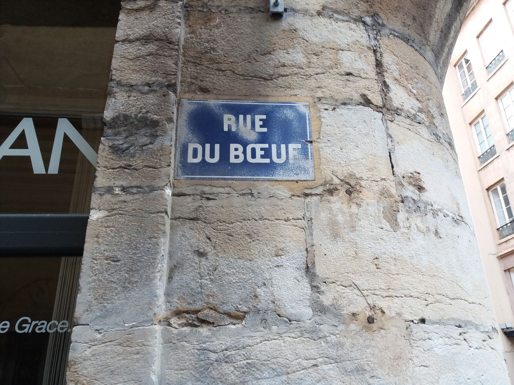
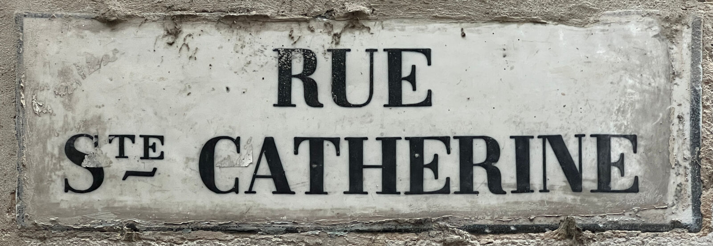
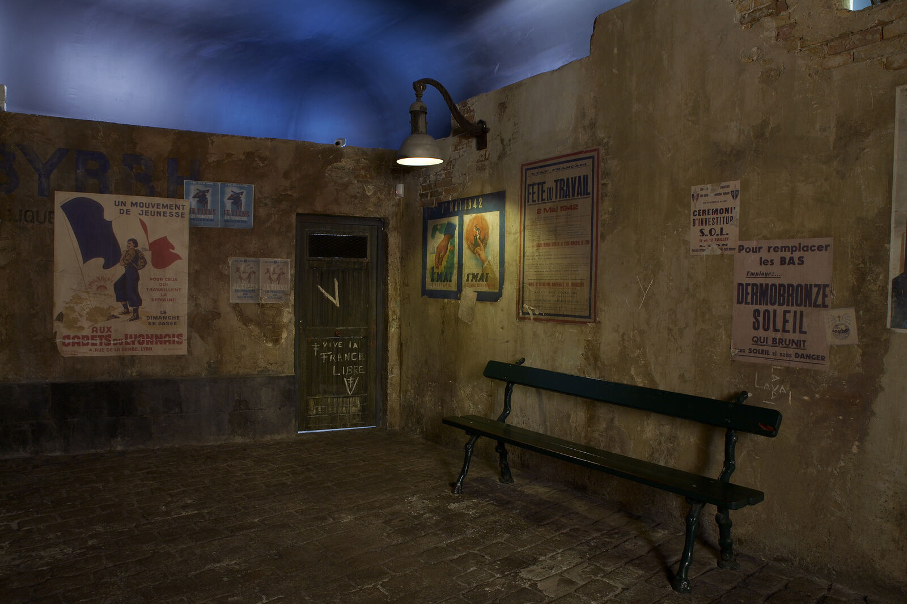

Home / Jewish Lyon guide / Jewish travel to Lyon
Jewish travel to Lyon
the honest FAQ
You want facts before you book. Below are the questions Jewish travellers ask us about Lyon, answered with what we can source and clear about what is not published. Security gets a direct answer, without alarm and without spin.
- 19 questions
- 4 sections
- Sourced, with gaps marked
- Checked 7 October 2026
Getting there and around
How do I get from Lyon-Saint-Exupéry airport to the city?
Take the Rhônexpress. It links the airport and Lyon Part-Dieu (stop Part-Dieu Vivier Merle) in less than 30 minutes, every 15 minutes, from 4:25 to midnight, seven days a week. Tickets are sold on rhonexpress.fr. The airport also has its own train station.
How do I get from Part-Dieu to the old town?
Lyon Part-Dieu is the city's main station. The TCL metro and tram network (tcl.fr) runs from there to Bellecour and Vieux Lyon. On a weekday, ask us your route when you book and we write it for you.
Can I take a taxi or the metro on Friday evening?
Plan your transfers before candle lighting. Once Shabbat starts, the metro and taxis are off the table if you keep Shabbat. Book your airport transfer for Friday morning at the latest, and arrive at your hotel with time to spare.
Can I walk between the synagogue, the old town and the Presqu'île?
Yes. The Grande Synagogue on quai Tilsitt is a short walk from Vieux Lyon and about ten minutes on foot from Bellecour, by our estimate. Villeurbanne is much farther: see where to stay in Lyon.




Kosher, Shabbat and community
Where can I eat kosher in Lyon?
The Beth Din de Lyon certifies 36 places in Lyon, Villeurbanne and Écully: restaurants, bakeries, butchers, groceries and caterers. Most are in Villeurbanne and the 6th arrondissement. Vieux Lyon has none. See kosher restaurants in Lyon.
Can I get a Shabbat meal?
Yes, with advance notice. Order from a caterer certified by the Beth Din before Thursday, or ask a Chabad house for a meal. Delivery to hotels is not published: ask each caterer. See kosher catering and Shabbat meals.
Is there a kosher hotel, and is there an eruv?
We know of no kosher hotel in Lyon, and no public eruv is published for Lyon; plan accordingly. Our page Shabbat in Lyon explains how to organise the weekend.
Where can I pray, and is there a minyan?
The Grande Synagogue (Consistorial rite) and Neveh Chalom (Sephardi) hold services, and so do seven Chabad houses and 25 neighbourhood synagogues. Times are published for the two main synagogues only. See synagogues in Lyon.
Is there a mikveh?
Yes, several. Mikvah Haya Mouchka, 60 rue Crillon, is listed as open nightly. See mikveh in Lyon for addresses and phones.
Where is the Jewish cemetery, and can I visit a family grave?
The Jewish cemetery of Lyon is La Mouche, 11 rue Abraham-Bloch, open Sunday to Thursday 8:00 to 18:00 and Friday 8:00 to 16:00. Call the Consistoire first with the name of the person. See the cemetery page.
Security: a straight answer
Is Lyon safe for Jewish visitors?
Most Jewish visits to Lyon pass without incident, but antisemitic acts do occur in the area: Lyon Capitale counted 36 between 7 October and 1 November 2023, with five arrests. The Rhône prefecture said at the time that patrols and the Sentinelle military mission were reinforced in front of Jewish institutions. Every Mishpacha Tours visit runs as a secured tour: private group, discreet routes, a guide from the community, a security escort on request. See our security standard.
Are synagogues protected?
Yes. French authorities keep security forces visible around synagogues and Jewish schools. A national instruction of the Interior Ministry reported by the press in late August 2026 asks for visible forces and possible checks around synagogues. Expect a check and bring a photo ID.
What common-sense steps do you advise?
Keep your plans to yourself and your group, and do not post your route or your hotel in real time. Travel with a companion rather than alone at night. Choose your own level of visibility: some members of the Lyon community wear a cap rather than a kippa in public, according to Grand Rabbi Daniel Dahan (Lyon Capitale, November 2023). Tell us if you have concerns, and we adapt.
What does Mishpacha Tours do about security?
Private groups only, never joined to strangers. Routes and meeting points chosen in advance and kept discreet. A guide who is a member of the community. A security escort on request, on any tour: it is priced separately and quoted on demand, never included in the tour price.
Our tours
How much does a tour cost?
The price is per group, not per person. The Jewish Lyon tour and the Memory tours cost 290 € for 1 to 4 people, plus 35 € per extra person from the 5th to the 10th. See the Jewish Lyon tour.
In which languages do you guide?
English, French or Spanish. We do not guide in Hebrew: Hebrew-speaking guests are guided in English. Tell us your language when you book.
Do you run tours on Shabbat?
Never. We do not guide on Shabbat or on Jewish holidays. Sunday morning is possible, and so is a Friday morning tour that ends well before candle lighting.
Can I cancel?
Yes, free of charge up to 24 hours before the start time.
Can we really go inside the Grande Synagogue?
Yes, on the Jewish Lyon and Stopover tours. The synagogue is closed to visitors outside the Heritage Days, and entry depends on its opening hours and on security clearance on the day. Your guide confirms before the walk begins.
Keep reading
Sources: rhonexpress.fr, tcl.fr, bethdin-lyon.fr, consistoiredelyon.fr, nevehchalom.fr, mikvah.org, lyon.fr, lyoncapitale.fr (1 November 2023), connexionfrance.com (9 October 2023). Compiled by Mishpacha Tours from these sources. Checked 7 October 2026.